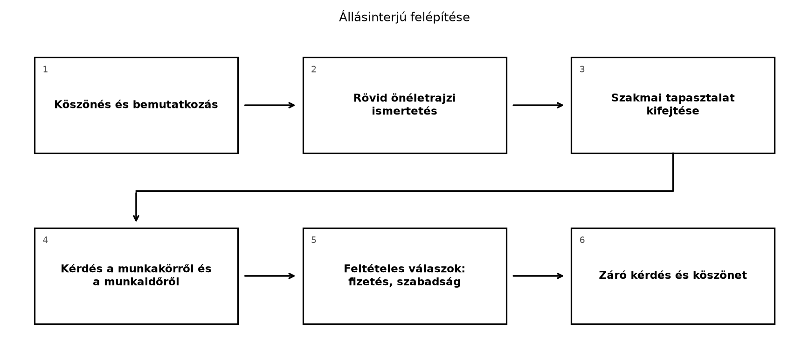

Egy cukrászüzemben délelőtt bejön egy külföldi vendég, aki angolul kérdezi, hogy a sütemény tartalmaz-e diófélét. Az értékesítő pult mögött álló tanuló nem találja a szavakat, ezért a vendég bizonytalanul megfordul és távozik. Később megérkezik egy német turistacsoport, és a vezetőjük a speciális kávékról érdeklődik. A tanuló el tudná mondani, hogy van házi mandulatej és laktózmentes habos kávé, de mivel nem tudja helyesen kifejezni, csak mutogat. A vendégek nem érzik magukat komfortosan, a forgalom elmarad, és a tanuló is kellemetlenül érzi magát.
Miért kell a cukrásznak idegen nyelv? A munkaerőpiac határokon átnyúlóvá vált, az üzleti vendégkör sok helyen nemzetközi, és a színvonalas kiszolgálás része az idegen nyelvű kommunikáció. Ugyanakkor a szakmai vizsgán is megjelennek idegen nyelvű feladatok, a szakmai fejlődéshez pedig hasznos, ha a tanuló el tud olvasni egy idegen nyelvű receptet, fel tud mondani egy gépkezelési utasítást, és be tud mutatkozni egy állásinterjún. Ez az alfejezet az angol és a német nyelv alapvető nyelvtani szerkezeteit, valamint a munkavállalói és a cukrászüzemi kommunikációhoz szükséges szókincset rendszerezi.
Képzeljünk el egy állásinterjút. A tanuló angolul szeretné elmondani, hogy korábban egy hónapig dolgozott egy cukrászdában, és most szeretne megtanulni tortákat díszíteni. Ha azt mondja: „I work in a pastry shop last month”, a mondat rossz, mert a múlt idejű eseményre jelen időt használ. Ha azt mondja: „I worked in a pastry shop last month”, máris érthető, és a munkáltató látja, hogy a jelölt tisztában van az egyszerű angol nyelvtannal. A nyelvtan nem önmagáért való; a helyes igeidő, a tagadás és a kérdésfeltevés segít abban, hogy a tanuló pontosan adja át az üzenetét, és elkerülje a félreértéseket.
Az alábbi folyamatábra a bemutatkozás és az állásinterjú tipikus lépéseit mutatja; ezt érdemes fejben tartani, mert a nyelvi feladatok is ezekre a helyzetekre épülnek:

A folyamatábra azt mutatja, hogy az állásinterjú során először a jelen idejű bemutatkozás, majd a múlt idejű tapasztalatleírás, végül a jövőre vonatkozó tervek megfogalmazása következik. Ezt a három igeidőt kell először áttekinteni.
A cukrászmunka során a tanulónak három nyelvi készségre van szüksége: beszéd, hallás utáni megértés, olvasás (a receptek és a gépfeliratok miatt). Az írás szerepe kisebb, de az állásinterjún és a munkakezdéskor szükség lehet rövid bemutatkozásra, önéletrajzra vagy egy rövid üzenet megírására.
Jelen idő. Az angolban két fontos jelen idejű szerkezet van: az egyszerű jelen (present simple) és a folyamatos jelen (present continuous).
A tagadás az egyszerű jelenben a do not / does not segédigével történik; a kérdőszórendben a do/does a mondat elejére kerül. Például: Do you like chocolate? Does he prepare the dough? A not a mondatban a segédige után áll: I do not (don’t) eat nuts. A does egyes szám harmadik személyben használatos, ilyenkor a főige visszanyeri az alapalakját.
Múlt idő. Az angol múlt idő legfontosabb alakja a simple past. Szabályos igéknél -ed végződést kap (worked, baked, cleaned), rendhagyó igéknél külön alakot kell megtanulni (go → went, eat → ate, buy → bought). Fontos a cukrászati szókincsben gyakori rendhagyó igék ismerete: be → was/were, have → had, make → made, cut → cut, put → put, set → set. A tagadás a did not / didn’t segítséggel történik, a kérdés pedig Did kezdetű. Példa: I baked a chocolate cake yesterday. Did you mix the cream? I didn’t use fresh raspberries.
Jövő idő. A jövő kifejezésére az angolban két gyakori mód van: a will + főnévi igenév (többnyire spontán döntés, ígéret, előrejelzés) és a be going to + főnévi igenév (tervezett szándék, szándékolt cselekvés). Példa: I will prepare the mise en place. He is going to decorate the wedding cake. We won’t (will not) use raw eggs.
Feltételes mód és segédigék. A tanulónak az állásinterjún és a munkahelyen gyakran kell udvariasan kérdeznie, javaslatot tennie vagy feltételes állítást megfogalmaznia. A legfontosabb segédigék: can, could, may, must, should, would. A feltételes mód tipikus alakja: would + főnévi igenév vagy could (múlt idejű képesség, udvarias kérés). Példa: I would like to work in a pastry shop. Could you show me the tempering machine? You should wear protective gloves.
A német nyelv szerkezete eltér az angoltól, ezért érdemes külön áttekinteni.
Jelen idő (Präsens). A német jelen idő kifejez rendszeres cselekvést, általános igazságot, és gyakran a jövőbeni tervezett cselekvést is. Az ige ragozása a személyes névmások szerint változik: ich arbeite, du arbeitest, er/sie/es arbeitet, wir arbeiten, ihr arbeitet, sie/Sie arbeiten. Példa: Ich arbeite in einer Konditorei. Wir backen jeden Tag frische Kuchen.
Múlt idő (Perfekt és Präteritum). A német beszélt nyelv a múlt kifejezésére leggyakrabban a Perfekt alakot használja: haben/sein + Partizip II. Példa: Ich habe einen Schokoladenkuchen gebacken. Er ist in die Küche gegangen. A Präteritum (egyszerű múlt) inkább írott szövegben vagy a sein, haben és modális igék esetén fordul elő: Ich war in einer Konditorei. Wir hatten viele Gäste. Az állásinterjún a Perfekt a természetesebb. Erős (rendhagyó) igék a cukrászati szókincsben: schneiden → geschnitten, schlagen → geschlagen, gießen → gegossen, backen → gebacken (Präteritum ma: backte). Szabályos (gyenge) igék: mischen → gemischt, kochen → gekocht, dekorieren → dekoriert.
Jövő idő (Futur I). A német jövő időt a werden + főnévi igenév szerkezettel képezzük. Példa: Ich werde die Torte dekorieren. Wir werden morgen eine Hochzeitstorte liefern. A beszélt nyelvben sokszor elég a jelen idő is, ha a szövegkörnyezet egyértelműen jövőre utal (pl. morgen).
Tagadás és kérdés. A németben a tagadás történhet nicht (igét, melléknevet, határozót, mondatrészt tagad) vagy kein/keine/keinen (főnévi tagadás: a főnevet tagadja, ha az határozatlan névelővel vagy névelő nélkül állna; ein Problem → kein Problem, Erfahrung → keine Erfahrung). Példa: Ich arbeite nicht am Wochenende. Ich habe keine Erfahrung. Er hat keinen Mehlvorrat. A kérdő mondatban az ige az első helyre kerül: Arbeitest du gern mit Schokolade? Haben Sie eine Allergie? A W-kérdőszók (wer, was, warum, wo, wann, wie stb.) után szintén az ige következik: Wo arbeiten Sie? Wie lange dauert die Schicht?
Feltételes mód és modális igék. A németben a feltételes módot leggyakrabban a würde + főnévi igenév szerkezettel fejezzük ki, de a modális igék (können, müssen, sollen, dürfen, wollen, möchten) is fontosak. Az udvarias kérésre a könnte (a kann Konjunktiv II alakja) és a möchte használatos. Példa: Ich würde gern in einer Konditorei arbeiten. Könnten Sie mir bitte das Rezept zeigen? Ich möchte das Praktikum absolvieren. A dürfen a szabályok, engedély kifejezésére szolgál: Man darf hier nicht essen. Du darfst die Maschine nicht ohne Einweisung benutzen.
Az angol mondat szórendje általában alany + ige + tárgy (SVO). A kérdő mondatokban a segédige előre kerül, de a tárgy a főige után marad. A németben a kijelentő mondat alapszórendje is alany + ige + tárgy, de az ige mindig a második pozícióban áll, akkor is, ha a mondat elején időhatározó vagy helyhatározó szerepel. Ilyenkor az alany az ige után kerül: Heute backe ich einen Apfelkuchen. A mellékmondatban (pl. dass kötőszóval) az ige a mondat végére kerül: Ich weiß, dass der Kuchen fertig ist. Az állásinterjún a leggyakoribb hibák közé tartozik, hogy a tanuló a magyarból kiindulva rossz helyre teszi az igét, ezért érdemes a szórendet szó szerint gyakorolni.
A munkavállalói szókincs az állásinterjún, a munkaszerződés megkötésekor és a mindennapi üzemi kommunikációban válik szükségessé. Az alábbi táblázat a legfontosabb szavakat és kifejezéseket rendezi angol és német nyelven, magyar megfelelővel.
| Magyar | Angol | Német |
|---|---|---|
| bemutatkozás | introduction | die Vorstellung |
| önéletrajz | CV / résumé | der Lebenslauf |
| munkaszerződés | employment contract | der Arbeitsvertrag |
| munkáltató | employer | der Arbeitgeber |
| munkavállaló | employee | der Arbeitnehmer |
| munkakör | job / position | die Stelle / Tätigkeit |
| üzem | workroom / pastry shop | die Konditorei / die Backstube |
| munkaidő | working hours | die Arbeitszeit |
| műszak | shift | die Schicht |
| túlóra | overtime | die Überstunden |
| szabadság | paid leave / holiday | der Urlaub |
| fizetés / bér | salary / wage | das Gehalt / der Lohn |
| felmondás | notice / termination | die Kündigung |
| próbaidő | probation period | die Probezeit |
| munkaruha | work uniform | die Arbeitskleidung |
| védőfelszerelés | protective equipment | die Schutzausrüstung |
| higiéniai vizsga | hygiene certificate | die Hygienebescheinigung |
| egészségügyi kiskönyv | health booklet | das Gesundheitszeugnis |
| kolléga | colleague / co-worker | der Kollege |
| főnök | boss / manager | der Chef / Vorgesetzte |
| étkezés | meals | die Verpflegung |
| ebédszünet | lunch break | die Mittagspause |
| szállás | accommodation | die Unterkunft |
A táblázat szavait érdemes hangosan gyakorolni; a kiejtéshez egyszerű szabályok: az angolban a hangsúly általában az első szótagon van, a németben pedig az alapszó első szótagján. A német magánhangzók rövid/hosszú szembenállása megváltoztathatja a jelentést (pl. Ofen [ófen] = sütő, offen [offen] = nyitott). Az angol th hang (pl. think, this) a magyar tanulónak gyakran nehézséget okoz: a fogak közé tett nyelvheggyel kell képezni. A német sch (pl. Schokolade) magyar s-hez hasonló, az ei ejtése áj, az ie hosszú í.
Ez a példa egy bemutatkozó interjút mutat be angolul, majd németül, magyar fordítással. A nyelvtani jelenségeket a párbeszéd után magyarázom.
Angol párbeszéd
Interviewer: Good morning! Thank you for coming.
Could you introduce yourself briefly?
Candidate: Good morning! My name is Anna Kovács. I am
twenty years old, and I live in Budapest. Last year I finished a pastry
course, and I worked in a small pastry shop for three months. I can
prepare basic sponge cakes and creams, and I would like to learn
chocolate decoration.
Interviewer: Do you have any experience with early
morning shifts?
Candidate: Yes, I worked from 5 a.m. to 1 p.m. at my
previous job. I didn’t have problems with the early start, and I always
followed the hygiene rules.
Interviewer: That sounds good. Could you work at
weekends?
Candidate: Yes, I can work at weekends, but I would
like one free Sunday per month.
Interviewer: Thank you. Do you have any questions about
the position?
Candidate: Yes, I have one question. What is the
probation period?
Interviewer: It is two months.
Candidate: Thank you for the information.
Magyar fordítás
Interjúztató: Jó reggelt! Köszönöm, hogy eljött.
Bemutatkozna röviden?
Jelölt: Jó reggelt! Kovács Anna vagyok. Húszéves
vagyok, és Budapesten lakom. Tavaly elvégeztem egy cukrászképzést, és
három hónapig dolgoztam egy kis cukrászdában. Tudok egyszerű piskótákat
és krémeket készíteni, és szeretnék megtanulni csokoládéval
díszíteni.
Interjúztató: Van tapasztalata a kora reggeli
műszakkal?
Jelölt: Igen, az előző munkahelyemen reggel 5-től
délután 1-ig dolgoztam. Nem okozott problémát a korai kezdés, és mindig
betartottam a higiéniai szabályokat.
Interjúztató: Ez jól hangzik. Tudna hétvégén
dolgozni?
Jelölt: Igen, tudok hétvégén dolgozni, de szeretnék
havonta egy szabad vasárnapot.
Interjúztató: Köszönöm. Van kérdése a munkakörrel
kapcsolatban?
Jelölt: Igen, lenne egy kérdésem. Mennyi a
próbaidő?
Interjúztató: Két hónap.
Jelölt: Köszönöm az információt.
Német párbeszéd
Arbeitgeber: Guten Morgen! Vielen Dank für Ihr
Kommen. Könnten Sie sich kurz vorstellen?
Bewerberin: Guten Morgen! Mein Name ist Anna Kovács.
Ich bin zwanzig Jahre alt und ich wohne in Budapest. Letztes Jahr habe
ich eine Konditorausbildung abgeschlossen, und ich habe drei Monate in
einer kleinen Konditorei gearbeitet. Ich kann einfache Biskuitböden und
Cremes zubereiten, und ich möchte lernen, mit Schokolade zu
dekorieren.
Arbeitgeber: Haben Sie Erfahrung mit
Frühschichten?
Bewerberin: Ja, ich habe in meinem früheren Job von 5
Uhr bis 13 Uhr gearbeitet. Die frühe Anfangszeit war für mich kein
Problem, und ich habe immer die Hygieneregeln befolgt.
Arbeitgeber: Das klingt gut. Könnten Sie am Wochenende
arbeiten?
Bewerberin: Ja, ich kann am Wochenende arbeiten, aber
ich möchte einen freien Sonntag im Monat.
Arbeitgeber: Vielen Dank. Haben Sie Fragen zur
Stelle?
Bewerberin: Ja, ich habe eine Frage. Wie lange ist die
Probezeit?
Arbeitgeber: Sie beträgt zwei Monate.
Bewerberin: Vielen Dank für die Information.
A párbeszédben a jelen idő a bemutatkozásra és a jelenlegi képességekre (I am, I live, I can prepare), a múlt idő a korábbi tapasztalatra (I worked, I finished, I didn’t have), a tervek és szándékok kifejezése (I would like to learn …; jövő idő: I will …, I am going to …) kapcsol a jövőhöz. A feltételes mód az udvarias kérésekben jelenik meg (Could you introduce, Könnten Sie sich vorstellen). A tagadásra a didn’t have és a kein Problem mutat példát. A németben a möchte a mögen Konjunktiv II alakja, és udvarias kívánságot fejez ki.
A következő lépések segítenek abban, hogy a tanuló önállóan felkészüljön egy idegen nyelvű állásinterjúra.
A nyelvi készségek minőségi jellemzői a cukrászati munkakörnyezetben:
Adott egy tanuló, aki egy bécsi cukrászdában szeretne dolgozni. Az állásinterjún elhangzik a kérdés: „Haben Sie Erfahrung mit Fondant?” A tanuló magyarul tudja, mi az a fondant, de németül nem tudja azonnal kifejezni. Ahelyett, hogy pánikba esne, a következőképpen válaszol: „Ja, ich habe im Kurs mit Fondant gearbeitet. Ich kann Torten überziehen und einfache Dekorationen machen.” Az interjúztató tovább kérdez: „Könnten Sie auch am Sonntag arbeiten?” A tanuló így válaszol: „Ja, das ist möglich, aber ich möchte einen freien Montag als Ausgleich.” Az ilyen válaszok azt mutatják, hogy a tanuló nemcsak a szót tudja, hanem a nyelvtani szerkezetet is helyesen alkalmazza. A felvételt követően a tanuló visszahallgatja a válaszait, és kijavítja a hibáit. Ez a módszer a gyakorlatban is alkalmazható.
Megoldások – Önellenőrzés
1. feladat (A)
Írd át a következő angol mondatokat múlt időbe!
a) I bake a chocolate cake.
b) She cleans the worktop.
c) They mix the cream.
d) He wants to learn tempering.
2. feladat (A)
Alkoss német kérdő mondatokat a megadott szavakból! Ügyelj a
szórendre.
a) du / arbeiten / in einer Konditorei / ?
b) wie lange / dauern / die Schicht / ?
c) Sie / haben / eine Allergie / ?
3. feladat (B)
Írj angolul 5 mondatos bemutatkozást a következő adatokkal: név (saját
neved), életkor, lakhely, egy korábbi cukrászati gyakorlat, jövőbeli
cél. Használj legalább egy múlt idejű és egy would like
szerkezetet!
4. feladat (B)
Egészítsd ki a német mondatokat a megfelelő tagadószóval (nicht
vagy kein/keine/keinen)!
a) Ich habe ___ Erfahrung mit Schokoladentemperieren.
b) Er arbeitet ___ am Sonntag.
c) Wir haben ___ Mehl im Lager.
d) Sie (egyes szám) isst ___ Nüsse.
5. feladat (C)
Javítsd ki a hibákat a következő rövid angol szövegben!
„I am working in a pastry shop last summer. I not like to clean the
tempering machine, but I did it every day. Yesterday I bake a wedding
cake for 40 people. I would like to working in your shop because I learn
new techniques.”
6. feladat (D)
Gyakorlati feladat: Játssz el egy rövid állásinterjút egy társaddal vagy
hangfelvételre! Az interjú témája: jelentkezés egy nyári idénymunkára
egy osztrák cukrászdában. A párbeszédben szerepeljen bemutatkozás, egy
múltbeli tapasztalat, egy jövőbeli terv, valamint egy udvarias kérdés. A
felvételt hallgasd vissza, és értékeld: használtál-e helyes igeidőt,
tagadást, kérdőszórendet; írd le a hibákat, és javítsd ki őket!
1. feladat
a) I baked a chocolate cake.
b) She cleaned the worktop.
c) They mixed the cream.
d) He wanted to learn tempering.
Ellenőrzés: mindegyik mondatban a szabályos múlt idő -ed
végződéssel vagy a rendhagyó ige múlt idejű alakjával szerepel;
mindegyik ige szabályos, ezért -ed végződést kap (baked,
cleaned, mixed, wanted).
2. feladat
a) Arbeitest du in einer Konditorei?
b) Wie lange dauert die Schicht?
c) Haben Sie eine Allergie?
Ellenőrzés: a kérdő mondatban az ige az első helyen áll (a, c), a
W-kérdőszó után az ige következik (b).
3. feladat
Példa megoldás: My name is … . I am … years old and I live in … .
Last year I did a pastry internship in a small bakery. I worked with
basic doughs and creams. I would like to learn chocolate decoration and
someday work in a fine pastry shop.
Ellenőrzés: a múlt idejű tapasztalat múlt időben (did, worked),
a jövőbeli cél would like szerkezettel szerepel, a bemutatkozás
jelen idejű.
4. feladat
a) keine Erfahrung (a főnévi tagadás, mert határozatlan névelővel
állna)
b) nicht am Sonntag (határozó tagadása)
c) kein Mehl (főnévi tagadás)
d) keine Nüsse (főnévi tagadás, többes szám)
Ellenőrzés: a tagadószó a mondat mondanivalójának megfelelően
nicht vagy a kein ragozott alakja.
5. feladat
Helyesbített szöveg:
„I worked in a pastry shop last summer. I did not like to clean the
tempering machine, but I did it every day. Yesterday I baked a wedding
cake for 40 people. I would like to work in your shop because I want to
learn new techniques.”
Hibák és javítások:
- I am working → I worked (múlt idejű időhatározó last
summer, ezért simple past)
- I not like → I did not like (a tagadáshoz did not
kell)
- Yesterday I bake → Yesterday I baked (múlt idő)
- would like to working → would like to work (az -ing
helyett főnévi igenév)
- because I learn → because I want to learn (jövőbeli cél,
célszerű want to vagy would like to szerkezettel
kifejezni).
6. feladat
Értékelési szempontok: a bemutatkozás tartalmazza a nevet, életkort,
lakhelyet, képzettséget (jelen idő); a tapasztalat múlt időben szerepel;
a terv jövő időben vagy würde/möchte szerkezettel van; az
udvarias kérdés feltételes módot használ (Could you…? / Könnten
Sie…?). A felvétel visszahallgatása után ellenőrizni kell a
szórendet, a tagadást és a kiejtést; a hibákat írásban javítani.
Ez az alfejezet az angol és a német nyelv alapvető igeidőit, tagadási és kérdőszórendi szabályait, feltételes módját és segédigéit rendszerezi a munkavállalói kommunikációhoz. A tanuló megtanulta, hogy az angol egyszerű jelen (I work), egyszerű múlt (I worked) és jövő idő (I will work / I am going to work) mikor használatos, és hogy a tagadás do/does/did not segédigével, a kérdés Do/Does/Did szórenddel történik. A németben a jelen idő (ich arbeite), a múlt idő (ich habe gearbeitet) és a jövő idő (ich werde arbeiten) mellett a szórend szabálya kiemelt fontosságú: az ige a kijelentő mondat második, a kérdő mondat első helyén áll. A feltételes mód udvarias kérésekben jelenik meg (I would like, Could you; ich möchte, Könnten Sie). A táblázatban összegyűjtött munkavállalói szókincs lehetővé teszi a bemutatkozást, az állásinterjún való részvételt és a mindennapi munkahelyi alapkommunikációt. A Továbbvitt eredmény ez a nyelvtani alap és a munkavállalói szókincs a(z) Cukrászati szakszókincs: anyagok, mennyiségek, eszközök, gépek és műveletek alfejezetben épül tovább, ahol a tejtermékek, lisztek, zsiradékok, kakaó és csokoládé, továbbá a cukrászati műveletek idegen nyelvű megnevezéseit és a receptolvasást dolgozzuk fel. A gyakorláshoz használjuk a párbeszédeket, a hangos feladatokat és a hibajavítási eseteket.